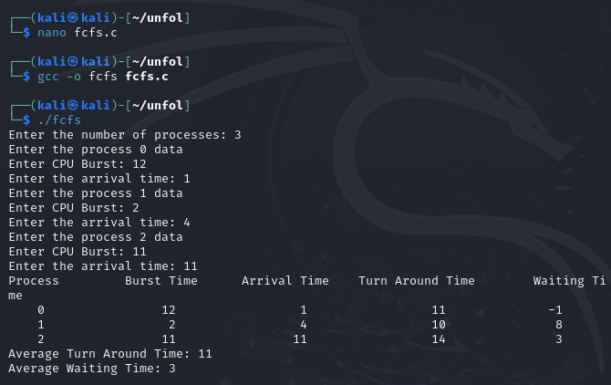
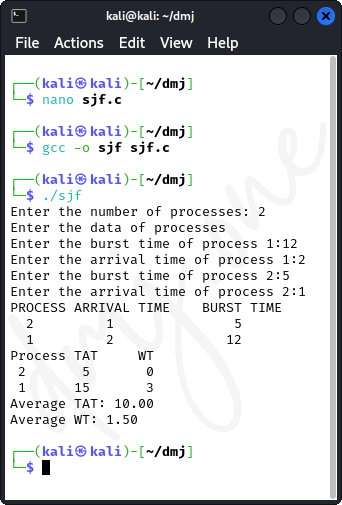
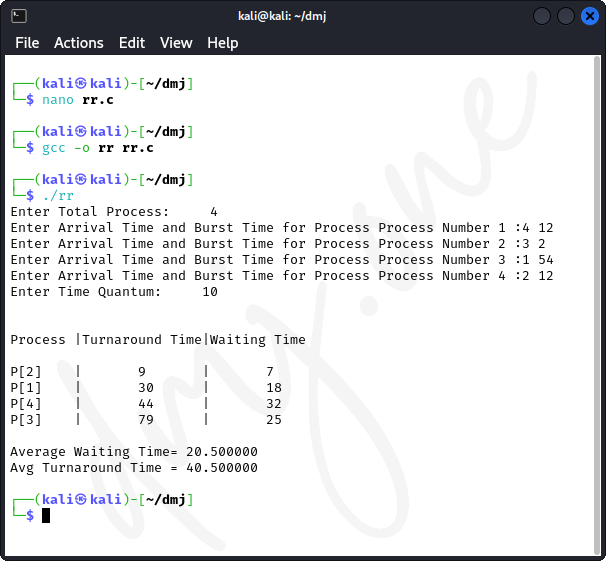
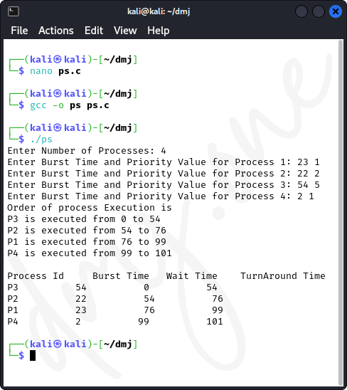

1. Introduction to CPU Scheduling Algorithms
CPU scheduling is a process which allows one process to use the CPU while the execution of another process is on hold (in waiting state) due to unavailability of any resource like I/O etc., thereby making full use of CPU. The main objective of CPU scheduling is to make the system efficient, fast, and fair. This practical will cover the implementation of four common CPU scheduling algorithms in C, specifically for educational and demonstration purposes on Kali Linux systems.
To compile and run this program on Kali Linux:
gcc -o scheduling scheduling.c # To compile
./scheduling # To run the codeThis script will compile the provided C code into an executable named 'scheduling', which you can then run to see the implementation of these scheduling algorithms.
1.1 First Come, First Served (FCFS)
The FCFS scheduling algorithm is the simplest type of CPU scheduling algorithm that schedules according to the arrival times of various processes. The process that arrives first is allocated the CPU first. The main disadvantage of this algorithm is the convoy effect, which leads to lower CPU and device utilization.
1.1.1 Code for FCFS Scheduling
/*
*
* First Come First Serve (FCFS) process scheduling algorithm.
*
* Waiting Time = Start Time - Arrival Time
* Turn Around Time = Burst Time + Waiting Time = Finish Time - Arrival Time
*
*/
#include <stdio.h>
typedef struct fcfs
{
int process; //Process Number
int burst; //Burst Time
int arrival; //Arrival Time
int tat; //Turn Around Time
int wt; //Waiting Time
}fcfs;
int sort(fcfs [], int);
int main()
{
int n, i, temp = 0, AvTat = 0, AvWt = 0;
printf ("Enter the number of processes: ");
scanf ("%d", &n);
fcfs arr[n]; //Array of type fcfs
int tct[n];
for (i = 0; i < n; i++)
{
arr[i].process = i;
printf ("Enter the process %d data\n", arr[i].process);
printf ("Enter CPU Burst: ");
scanf ("%d", &(arr[i].burst));
printf ("Enter the arrival time: ");
scanf ("%d", &(arr[i].arrival));
}
//Sorting the processes according to their arrival time
sort(arr, n);
printf ("Process\t\tBurst Time\tArrival Time\tTurn Around Time\tWaiting Time\n");
for (i = 0; i < n; i++)
{
tct[i] = temp + arr[i].burst;
temp = tct[i];
arr[i].tat = tct[i] - arr[i].arrival;
arr[i].wt = arr[i].tat - arr[i].burst;
AvTat = AvTat + arr[i].tat;
AvWt = AvWt + arr[i].wt;
printf ("%5d\t%15d\t\t%9d\t%12d\t%12d\n", arr[i].process, arr[i].burst, arr[i].arrival, arr[i].tat, arr[i].wt);
}
printf ("Average Turn Around Time: %d\nAverage Waiting Time: %d\n", AvTat / n, AvWt / n);
return 0;
}
//Bubble Sort
int sort(fcfs arr[], int n)
{
int i, j;
fcfs k;
for (i = 0; i < n - 1; i++)
{
for (j = i + 1; j < n; j++)
{
//Sorting the processes according to their arrival time
if (arr[i].arrival > arr[j].arrival)
{
k = arr[i];
arr[i] = arr[j];
arr[j] = k;
}
}
}
return 0;
}

Figure: FCFS
1.2 Shortest Job First (SJF)
The SJF algorithm assigns the CPU to the process that has the smallest next CPU burst. If two processes have the same length next CPU burst, FCFS scheduling is used to break the tie. This algorithm can be either preemptive or non-preemptive. It significantly reduces the average waiting time for other processes awaiting execution.
1.2.1 Code for SJF Scheduling
/*
* Shortest Job First, Non-Preemptive type.
*/
#include <stdio.h>
typedef struct sjf
{
int process;
int burst;
int arrival;
int tat;
int wt;
}sjf;
void sort(sjf [], int);
int main()
{
int n, i, j, TCT, count_process = 0, count = 0, minBurst, pos;
float AvTAT = 0.0, AvWT = 0.0;
printf ("Enter the number of processes: ");
scanf ("%d", &n);
sjf arr[n];
printf ("Enter the data of processes\n");
for (i = 0; i < n; i++)
{
arr[i].process = i + 1;
printf("Enter the burst time of process %d:", arr[i].process);
scanf ("%d", &(arr[i].burst));
printf ("Enter the arrival time of process %d:", arr[i].process);
scanf ("%d", &(arr[i].arrival));
}
sort (arr, n);
printf ("PROCESS\tARRIVAL TIME\tBURST TIME\n");
for (i = 0; i < n; i++)
printf ("%3d\t%5d\t\t%5d\n", arr[i].process, arr[i].arrival, arr[i].burst);
TCT = arr[0].tat = arr[0].burst;
arr[0].wt = arr[0].tat - arr[0].burst;
arr[0].arrival = -1;
sort(arr, n);
count_process = 1;
while (count_process < n)
{
minBurst = 999;
count = 0;
i = count_process;
while (TCT >= arr[i].arrival && i < n)
{
count++;
i++;
}
for (j = i - count; count != 0 && j < n; j++, count--)
{
if (arr[j].burst < minBurst)
{
minBurst = arr[j].burst;
pos = j;
}
}
TCT = TCT + arr[pos].burst;
arr[pos].tat = TCT - arr[pos].arrival;
arr[pos].wt = arr[pos].tat - arr[pos].burst;
arr[pos].arrival = -1;
sort (arr, n);
count_process++;
}
printf ("Process\tTAT\tWT\n");
for (i = 0; i < n; i++)
printf ("%2d\t%2d\t%2d\n", arr[i].process, arr[i].tat, arr[i].wt);
for (i = 0; i < n; i++)
{
AvTAT = AvTAT + arr[i].tat;
AvWT = AvWT + arr[i].wt;
}
printf ("Average TAT: %.2f\nAverage WT: %.2f\n", AvTAT / n, AvWT / n);
return 0;
}
void sort(sjf arr[], int n)
{
int i, j;
sjf temp;
for (i = 0; i < n - 1; i++)
for (j = i + 1; j < n; j++)
if (arr[i].arrival > arr[j].arrival)
{
temp = arr[i];
arr[i] = arr[j];
arr[j] = temp;
}
}

Figure: SJF
1.3 Round Robin (RR)
The Round Robin algorithm is designed especially for time-sharing systems. It is similar to FCFS scheduling, but includes the use of time quantum (time slice). Process execution is interrupted after its time slice expires and then placed at the back of the ready queue. This algorithm is widely used for its fairness in handling processes.
1.3.1 Code for RR Scheduling
#include<stdio.h>
int main()
{
int count,j,n,time,remain,flag=0,time_quantum;
int wait_time=0,turnaround_time=0,at[10],bt[10],rt[10];
printf("Enter Total Process:\t ");
scanf("%d",&n);
remain=n;
for(count=0;count<n;count++)
{
printf("Enter Arrival Time and Burst Time for Process Process Number %d :",count+1);
scanf("%d",&at[count]);
scanf("%d",&bt[count]);
rt[count]=bt[count];
}
printf("Enter Time Quantum:\t");
scanf("%d",&time_quantum);
printf("\n\nProcess\t|Turnaround Time|Waiting Time\n\n");
for(time=0,count=0;remain!=0;)
{
if(rt[count]<=time_quantum && rt[count]>0)
{
time+=rt[count];
rt[count]=0;
flag=1;
}
else if(rt[count]>0)
{
rt[count]-=time_quantum;
time+=time_quantum;
}
if(rt[count]==0 && flag==1)
{
remain--;
printf("P[%d]\t|\t%d\t|\t%d\n",count+1,time-at[count],time-at[count]-bt[count]);
wait_time+=time-at[count]-bt[count];
turnaround_time+=time-at[count];
flag=0;
}
if(count==n-1)
count=0;
else if(at[count+1]<=time)
count++;
else
count=0;
}
printf("\nAverage Waiting Time= %f\n",wait_time*1.0/n);
printf("Avg Turnaround Time = %f",turnaround_time*1.0/n);
return 0;
}

Figure: RR
1.4 Priority Scheduling
Priority Scheduling is a method of scheduling processes based on priority. In this algorithm, a lower priority is represented by a larger integer value; thus, a process with higher priority is treated as a process with numerically smaller priority value. It can be either preemptive or non-preemptive.
1.4.1 Code for Priority Scheduling
/*
* C program to implement priority scheduling
*/
#include <stdio.h>
//Function to swap two variables
void swap(int *a,int *b)
{
int temp=*a;
*a=*b;
*b=temp;
}
int main()
{
int n;
printf("Enter Number of Processes: ");
scanf("%d",&n);
// b is array for burst time, p for priority and index for process id
int b[n],p[n],index[n];
for(int i=0;i<n;i++)
{
printf("Enter Burst Time and Priority Value for Process %d: ",i+1);
scanf("%d %d",&b[i],&p[i]);
index[i]=i+1;
}
for(int i=0;i<n;i++)
{
int a=p[i],m=i;
//Finding out highest priority element and placing it at its desired position
for(int j=i;j<n;j++)
{
if(p[j] > a)
{
a=p[j];
m=j;
}
}
//Swapping processes
swap(&p[i], &p[m]);
swap(&b[i], &b[m]);
swap(&index[i],&index[m]);
}
// T stores the starting time of process
int t=0;
//Printing scheduled process
printf("Order of process Execution is\n");
for(int i=0;i<n;i++)
{
printf("P%d is executed from %d to %d\n",index[i],t,t+b[i]);
t+=b[i];
}
printf("\n");
printf("Process Id Burst Time Wait Time TurnAround Time\n");
int wait_time=0;
for(int i=0;i<n;i++)
{
printf("P%d %d %d %d\n",index[i],b[i],wait_time,wait_time + b[i]);
wait_time += b[i];
}
return 0;
}

Figure: PS